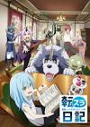
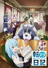

Heading 1
Lycoris Recoil is the best anime of 2022
Bocchi the Rock is so good
Rimuru Tempest from Tensura/Slime isekai is the best protagonist
This is the link to Oshi No Ko official website
Visit ONK official website!
This is the link to Gundam.Info
Visit Gundam.Info!
This is the link to the official website of Bocchi the Rock!
Visit the official website of Bocchi the Rock!
This is the link to the wiki fandom to Slime isekai/Tensura
Visite the official webiste to Slime isekai Memories!
Visit the wiki fandom of Slime isekai/Tensura!
This is the link to Slime isekai
This is the official website to Lycoris Recoil
Visit the official website of Lycoris Recoil!
Here's some images of Oshi No Ko,Slime isekai/Tensura(The time I got Reincarnated as a Slime), Tensura Nikki(Tensura Diaries), Lycoris Recoil


This is the link to Oshi No Ko official website
Visit ONK official website!This is the link to Gundam.Info
Visit Gundam.Info!This is the link to the official website of Bocchi the Rock!
Visit the official website of Bocchi the Rock!This is the link to the wiki fandom to Slime isekai/Tensura
Visite the official webiste to Slime isekai Memories! Visit the wiki fandom of Slime isekai/Tensura!This is the link to Slime isekai
This is the official website to Lycoris Recoil
Visit the official website of Lycoris Recoil!Here's some images of Oshi No Ko,Slime isekai/Tensura(The time I got Reincarnated as a Slime), Tensura Nikki(Tensura Diaries), Lycoris Recoil 